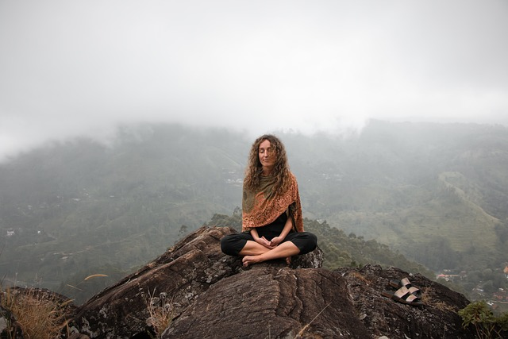
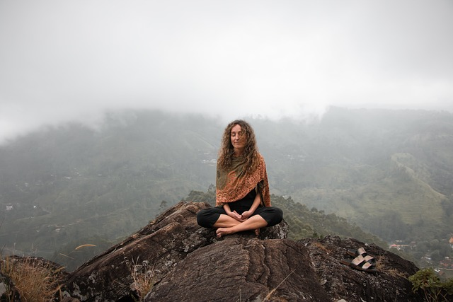

Yoga
Yoga is an ancient practice that originated in the Indian subcontinent, with a history that spans thousands of years. Its roots can be traced back to the Indus Valley Civilization, around 2700-1500 BCE. The word "yoga" is derived from the Sanskrit word "yuj," which means to unite or yoke, signifying the connection between mind, body, and spirit. The earliest mention of yoga can be found in the ancient Indian texts known as the Vedas. Over the centuries, various forms of yoga developed, including Hatha, Ashtanga, Vinyasa, and Bikram yoga, among others. Yoga became more structured and systematized with the codification of yoga sutras by the sage Patanjali around 200 CE. The practice of yoga includes physical postures (asanas), breath control (pranayama), meditation, and ethical principles. It was traditionally a spiritual and philosophical discipline, but it has evolved to encompass various physical, mental, and therapeutic aspects. Today, yoga is practiced worldwide, promoting physical well-being, mental clarity, and inner peace, while honoring its deep and diverse historical heritage.

 
